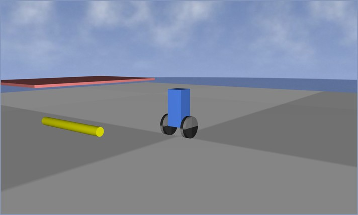

Inserting your own logic into the simulation loop
A scene need not just fall passively — you can insert your own logic that runs at every step. Two add-on objects exist for this.
Declarative (feedforward) control: to each property you assign either an interpolated curve (times + values), or a function of time given as a string. This is ideal for moving kinematic bodies — conveyors, arms, drive cams.
% steady rotation of a screw: EulerAngles as a function of time t phx.Script(screw, {"EulerAngles", "[2*pi*t*0.5 0 0]"}); % prescribed path of an arm: interpolation of given points (pchip method) phx.Script(arm, {"Position", time, position, "pchip"}, ... {"EulerAngles", time, angle});
Inserts an arbitrary computation into the simulation loop without writing a custom class. The
supplied callback is called every (sub)step with the signature
fcn(obj, parents, dt, time) and acts by modifying the bound bodies
directly. State between steps can be kept in obj.UserData. It is the
ideal tool for feedback control, custom force laws or filters.
% a time-dependent periodic force phx.Function(body, @(obj, p, dt, t) p{1}.applyForce([0 0 50]*sin(t))); % a controller reading the scene state and driving several bodies (feedback) phx.Function({ball, plate}, @(obj, p, dt, t) balanceLaw(p, Kp, Kd));
phx.Script when you
know the profile in advance. Use phx.Function when you need to react
to the current state (read position/velocity and compute a control action). The same feedback can
also be written as a plain MATLAB loop around sim.step, which is
how the self-balancing robot walked through below does it.
An example that combines almost everything from the previous topics into one working whole — a self-balancing two-wheeled robot (a segway). It shows what more complex work with PHX can look like.
The scene is built from ordinary building blocks:
TargetVelocity keeps it
saturated, so it delivers exactly MaxTorque, and the body feels
the equal and opposite reaction.sim.step.phx.Logger records the body tilt and
the sensor readings for a later plot.% --- core of the control loop (runs with a 10 ms step), steering left out --- Kp = 6000; Kd = 3000; Kv = 2000; vRef = 3; dt = 0.01; sim = phx.Simulation; for k = 1:1000 pitch = body.EulerAngles(2); % sensor: body tilt pitchRate = body.AngularVelocity(2); % sensor: tilt rate speed = -body.LinearVelocity(1); % sensor: forward speed (it drives along -x) tau = Kp*pitch + Kd*pitchRate + Kv*(vRef - speed); % PD + speed term for hub = [hubL hubR] % hub motors as a pure torque source hub.TargetVelocity = sign(tau)*1e6; hub.MaxTorque = abs(tau); end sim.step(dt, 1, 1); % one simulation step end

phxex_segway shown directly in the interactive PHX viewer
(sky mode). The robot actively keeps itself upright; an obstacle (a ramp) included in the scene
sits in the foreground.The same approach — bodies × joints × sensors × a
phx.Function/control loop — is behind advanced examples such
as phxex_drone (a quadcopter),
phxex_balance (balancing a ball on a plate) or
phxex_rocket. Once you master this skeleton, you can build
practically any controlled mechanism in PHX — run them from the
Examples gallery.